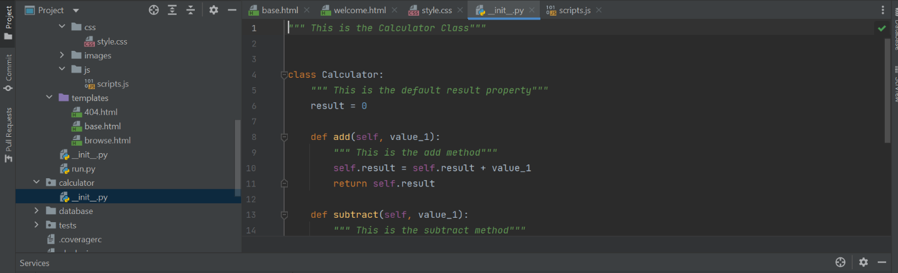
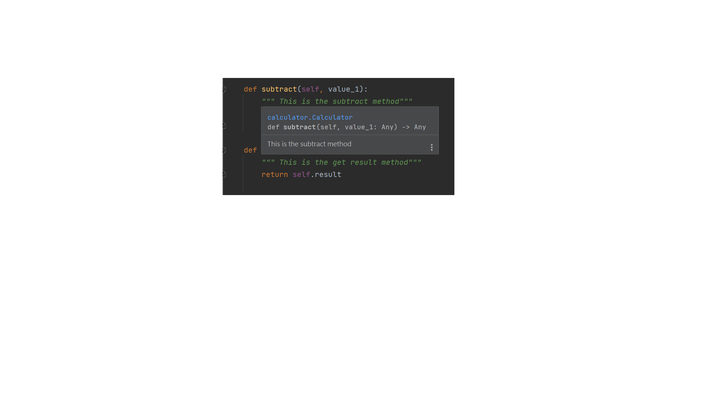

Calculator and how it uses the Ideas of Encapsulation, Inheritance and Abstraction
Encapsulation in a Calculator
Encapsulation is the fundamental concept that involves wrapping data and methods that work on data within one unit
Meaning making smaller working single units of code that do 1 thing and 1 thing specifically
Imagine making lego blocks and then stacking them together, but each lego works as its own unit
Encapsulation in a Calculator
nheritance allows us to define a class that inherits all the methods and properties from another class. Parent class is the class being inherited from, also called base class. Child class is the class that inherits from another class, also called derived class.
in this case the calculator inherits its own parent class with self. methods